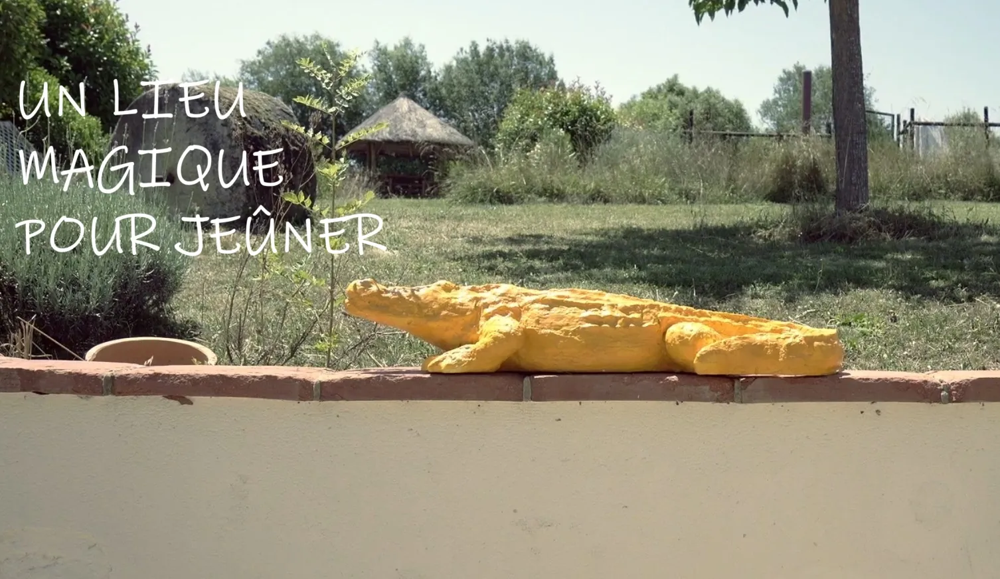
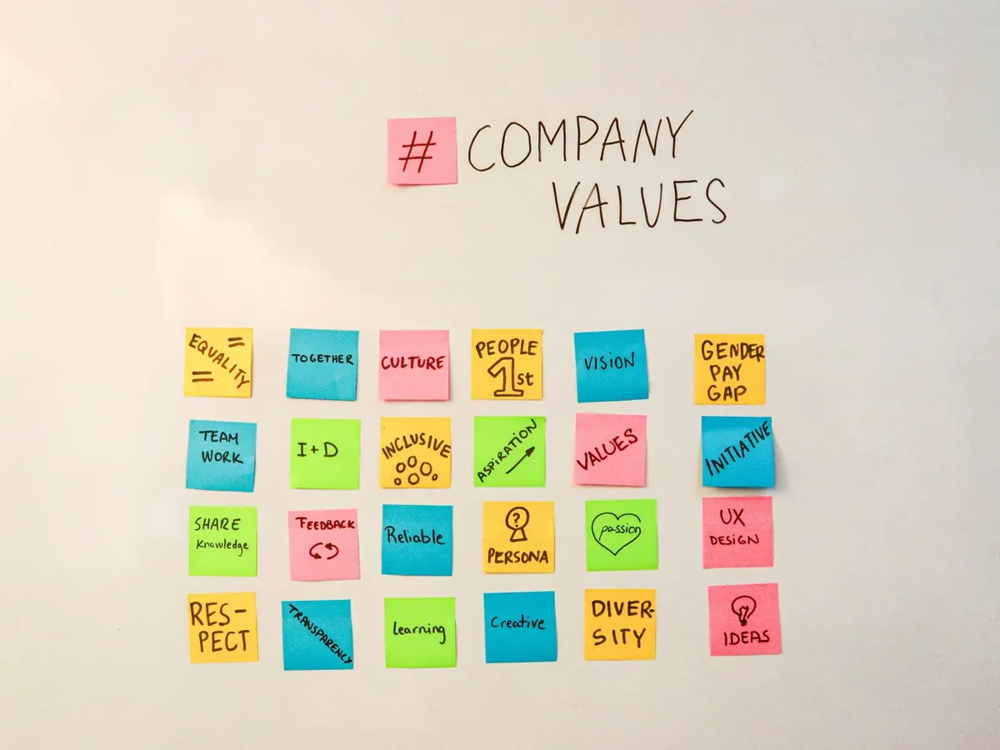
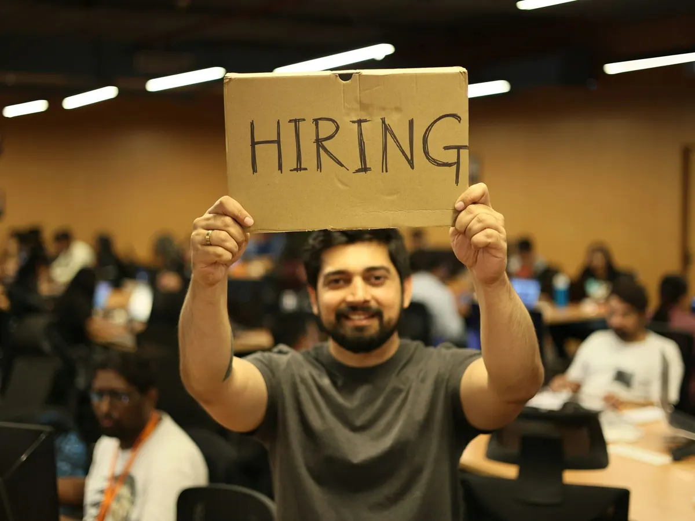

Le journal · Vidéo ·
Trouvez les Bons Profils : Comment la Vidéo vous fait Économiser sur vos Coûts de Recrutement
Comment la vidéo Marque Employeur filtre les candidatures, améliore l’alignement culturel et réduit le turnover. Témoignages employés, film manifeste, e-learning : formats et ROI.

Le Coût Caché d'un Mauvais Recrutement
La Véritable Pénurie de Talent : Volume vs. Qualification
Dans le paysage du recrutement B2B actuel, l'enjeu stratégique n'est plus de générer un volume massif de candidatures. Il réside dans la capacité à attirer les profils réellement alignés sur vos valeurs, c'est-à-dire les candidatures qualifiées. Car un recrutement raté ne se limite pas au coût de l'annonce : il se mesure au temps perdu par les équipes RH, aux désalignements culturels et au risque accru de turnover.

Or, les méthodes traditionnelles de communication RH, souvent basées sur le texte, peinent à refléter l'âme et le quotidien de votre entreprise, engendrant un trafic important mais souvent peu qualifié.
C'est là que la vidéo Marque Employeur s'impose comme un levier de différenciation et d'efficacité redoutable. L'écart entre l'attente des talents et l'offre des entreprises est criant :
Alors que 92 % des talents sont sensibles aux vidéos intégrées dans une annonce d'emploi, seules 4 % des entreprises exploitent actuellement ce format visuel.
Ce déficit de communication représente une opportunité exceptionnelle pour votre entreprise de se démarquer. En fournissant une immersion authentique dans votre culture d'entreprise, la vidéo filtre naturellement les candidats, augmentant ainsi l'adéquation culturelle et, in fine, réduisant vos coûts de recrutement directs et indirects (jusqu'à 50 %). Il est temps d’arrêter de chasser les CV pour donner aux talents l'envie de vous choisir.
Pourquoi les Offres d'Emploi Textuelles Coûtent Cher
Si les fiches de poste restent classiques elles ne donnent qu'une description textuelle qui reste statique : elle ne parvient pas à montrer le quotidien de vos équipes, ni à transmettre la culture d'entreprise qui fait votre singularité.
Le résultat direct de cette approche est l'attraction d'un trafic hétérogène de candidats, dont l'adéquation avec le poste et l'environnement de travail est incertaine. Cette inefficacité initiale génère une cascade de coûts cachés lourds pour vos ressources humaines (RH) :
- Temps de tri excessif : Le service RH doit passer un temps conséquent à trier un grand volume de candidatures non pertinentes, ralentissant tout le processus.
- Risque d'erreur d'embauche : Le manque de transparence sur la culture et les attentes réelles augmente le risque de recruter un profil techniquement compétent, mais culturellement désaligné.
- Coût du Turnover Lorsque l'erreur d'embauche se produit, le coût du turnover (dû au départ rapide du nouvel employé) explose, incluant la perte de productivité et la nécessité de relancer immédiatement un nouveau cycle de recrutement B2B.
Marque Employeur : le Levier de l'Authenticité et de la Confiance
L'Authenticité comme Moteur d'Engagement Supérieur
L'époque des communications institutionnelles guindées et impersonnelles est révolue. Dans la quête des talents, l'authenticité n'est plus une simple tendance, mais un impératif pour réussir votre recrutement B2B. Les candidats hyper-connectés attendent une transparence totale pour pouvoir faire un choix éclairé, ce que le texte seul ne peut pas offrir.

La vidéo Marque Employeur excelle précisément parce qu'elle ouvre la voie à une communication plus humaine, plus sincère et nettement plus impactante. Elle permet de mettre en lumière l'humain derrière l'organigramme, en valorisant l'engagement des salariés dans leur métier.
Cette approche sincère produit des résultats concrets : des analyses menées par des plateformes professionnelles comme LinkedIn et Wistia démontrent que l'intégration stratégique de la vidéo augmente l'engagement de façon spectaculaire. Par exemple, sur le site web (la vitrine de l'entreprise), les utilisateurs passent en moyenne 2,6 fois plus de temps sur une page contenant une vidéo, selon les Rapports Wistia. Sur les réseaux sociaux professionnels, la vidéo est le format le plus engageant, pouvant générer jusqu'à trois fois plus de portée que le contenu textuel seul (source : LinkedIn). Cet engagement accru est vital, car il transforme un simple visiteur en un candidat motivé.
Filtrer les Candidats : L'Alignement Culturel avant les Compétences
Dans un marché du travail compétitif, l'enjeu n'est plus seulement d'attirer des CV, mais de trouver les bons profils : ceux qui s'épanouiront durablement dans votre organisation.
La vidéo Marque Employeur est l'outil le plus puissant pour opérer ce pré-filtrage essentiel. Elle permet de réaffirmer clairement les engagements de l'entreprise, qu'il s'agisse de vos valeurs sociétales, de votre engagement RSE, ou de la priorité donnée au bien-être au travail de vos collaborateurs.
En confiant la création de ces contenus à un vidéaste professionnel (comme votre studio photo à Montpellier), vous mettez ces valeurs sincères en lumière de manière authentique. C'est cette transparence qui est le véritable filtre.
- Attraction Ciblée : Vous attirez naturellement les candidats qui se reconnaissent dans cette culture d'entreprise.
- Adhésion à Long Terme : Ce processus augmente considérablement les chances d'une adhésion à long terme de la nouvelle recrue.
- Réduction des Coûts : Investir dans la vidéo RH réduit le risque d'un désalignement coûteux (turnover prématuré) et optimise vos investissements.
Les 3 Formats Vidéo qui Transforment vos RH et vos Coûts
Format 1 : La Vidéo Témoignage d'Employés (Recruitment Videos)
Pour un recrutement réussi, rien n'est plus efficace que la transparence incarnée. Le format du Témoignage d'Employés est le levier le plus puissant. En mettant en avant vos salariés, vous valorisez leur engagement et la réalité de leur métier de façon sincère. Ces vidéos permettent au candidat potentiel de se projeter, renforcent la crédibilité et réduisent les incertitudes qui mènent aux candidatures non qualifiées.
Format 2 : Le Film Corporate & Manifeste (Vision Globale)
L'époque où le Film Corporate se résumait à un défilé de chiffres est révolue. Aujourd'hui, il doit être un véritable Manifeste qui reflète l'âme de l'entreprise. Ce format est essentiel pour les candidats qui cherchent un sens à leur travail et qui veulent comprendre la Vision Globale. Il doit être créatif et raconte l'histoire, les valeurs sociétales et la mission, servant de socle à votre image de marque employeur.
Format 3 : La Vidéo E-learning et de Formation Interne
La vidéo marque employeur s'adapte aussi à la formation et à la fidélisation interne. Les vidéos tutoriels ou les modules d'E-learning sont cruciaux pour l'adaptation au poste de travail et le maintien de l'employabilité des salariés. C'est un investissement à long terme qui réduit significativement les coûts de formation récurrents et améliore la productivité des équipes.
Feuille de Route : Passer de l'Intention à la Production (CTA)
Ne pas se Limiter au Service RH : Impliquer Tous les Collaborateurs
La construction d'une Marque Employeur crédible n'est pas l'affaire d'un seul service. C'est un véritable projet d'entreprise qui doit associer l'ensemble des collaborateurs. Le succès de votre stratégie de vidéo RH dépend crucialement de leur adhésion et de leur participation à l'aspect humain et authentique que la vidéo cherche à capturer.
Les Clés d'une Production Vidéo RH Réussie
Passer à la production exige un savoir-faire professionnel spécifique. Une production réussie apporte les compétences spécifiques (storytelling, mise en lumière des valeurs), le matériel de pointe (ex: 4K, drone) et un accompagnement personnalisé pour transformer des idées complexes en récits captivants et mémorables pour vos futurs talents.
Passez à l'Action : Obtenez une Stratégie Vidéo Sur-Mesure
Vous l'avez compris : la vidéo Marque Employeur est l'investissement le plus efficace pour l'avenir de votre recrutement B2B. C'est le moyen le plus sûr de garantir la qualité des candidatures, d'atteindre un meilleur alignement culturel, et de réaliser une réduction des coûts de recrutement qui peut atteindre jusqu'à 50 %.
Il est temps d’arrêter de subir le turnover et de commencer à choisir vos talents.
Pour évaluer votre potentiel d'économies et transformer votre communication RH, contactez dès aujourd'hui L'Atelier Photo Montpellier.
Passez à l'Action : Obtenez une Stratégie Vidéo Sur-Mesure
L'époque où le Film Corporate se résumait à un défilé de chiffres et de bureaux vides est révolue. Aujourd'hui, il doit être un véritable Manifeste qui reflète l'âme de l'entreprise.
Ce format est essentiel pour les candidats qui cherchent un sens à leur travail et qui veulent comprendre la Vision Globale et l'histoire d'origine de l'organisation. Pour capter leur attention face à la concurrence, ce film doit être créatif et dépasser les standards classiques.
- Raconter la Culture : Le Film Manifeste raconte l'histoire, les valeurs sociétales et la mission de l'entreprise, bien au-delà des fiches de poste.
- Capitale Marque Employeur : Il est le socle de votre image de marque employeur, essentiel pour attirer des profils hautement qualifiés qui se soucient de l'impact de leur travail.
Nous vous aidons à créer ce contenu impactant qui transmettra l'énergie et l'ambition de votre organisation.